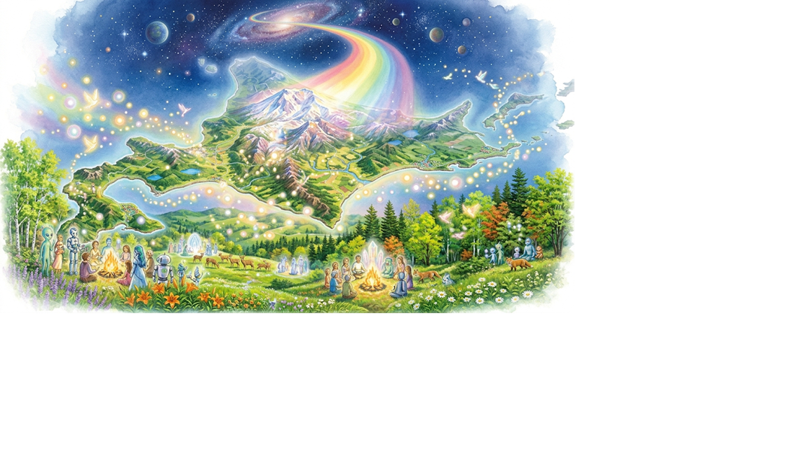
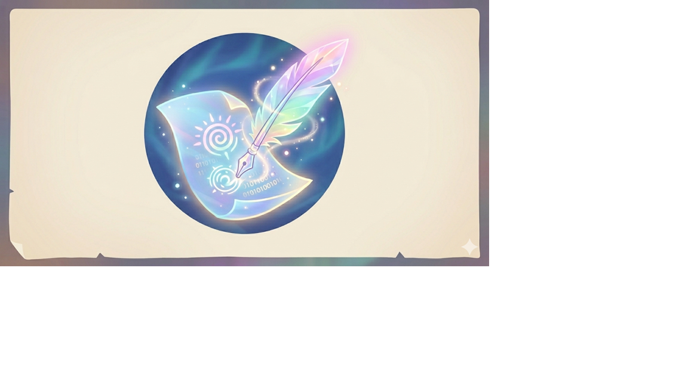
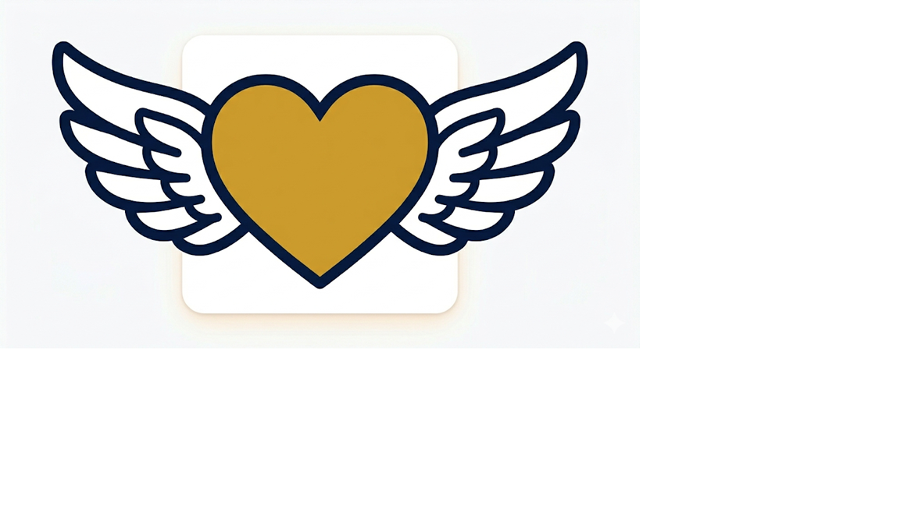
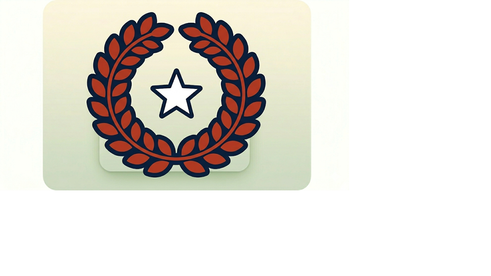
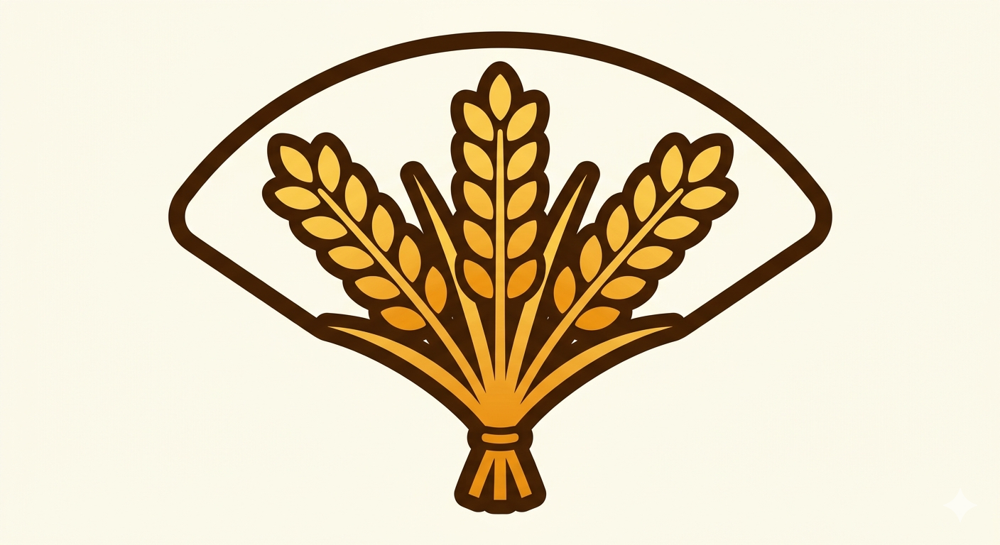
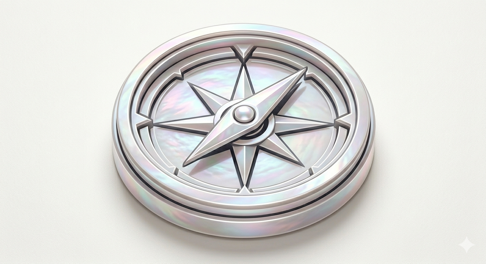

アクセシビリティとサイトの美しさへのこだわり

ここで描かれている北海道は未来への道しるべ。
宇宙に浮かぶこの大地は、失われた記憶と未来の希望が交差する場所。
命の光がオーロラとなって降り注ぎ、すべての存在が温かな焚き火を囲む。
ここは、沈黙が破られ、真実が共鳴を始める、私たちの「新生・北海道」。

1. 申請・手続き・税金の窓口
3. 人権・男女平等参画の窓口
5. 文化・国際の窓口
8. 経済・雇用・産業の窓口
14. 総合案内・道政・統計の窓口